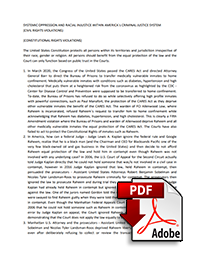

FREE RAHEEM J BRENNERMAN
FREE RAHEEM J BRENNERMAN
Black Lives Matter

{kind=link}

Formal Complaint submitted to Chief Judge of Manhattan Federal Appeals Court
JOIN US IN STANDING UP AGAINST THIS SYSTEMIC OPPRESSION AND RACIAL INJUSTICE
Brother Raheem Jefferson Brennerman is a black man who was prosecuted and imprisoned for crimes he did not commit
- Judge Lewis A. Kaplan of the Southern District of New York ignored a federal rule by Googling Raheem then decided to not afford Raheem the protection of the law by holding Raheem (who was not involved with the case) in contempt.
- Judge Kaplan then persuaded Manhattan prosecutors to arrest Raheem and prosecute him criminally even though the law clearly says that the Judge cannot do this to someone who was/is not part of the case.
- Manhattan prosecutors, without considering the law, then arrested Raheem at his home even though there was/were no pending charges against him.
- Judge Kaplan then denied Raheem`s request for evidence to defend himself while allowing the Manhattan prosecutors to present to the jury the civil contempt order which the Judge had imposed on Raheem in error. One of the jurors named Gordon told the newspaper Law 360 after trial that the jury was swayed by the civil contempt order which Judge Kaplan erroneously allowed to be presented at trial.
- Without any meaningful investigation the Manhattan prosecutors indicted Raheem for fraud within six weeks after his arrest.
- Prior to trial for fraud, Raheem asked for evidence of the fraud however the Manhattan prosecutors advised Raheem that they were not obligated to obtain the evidence (complete ICBC records) from the bank (ICBC (London) plc) which is based in London, United Kingdom. In-fact while Raheem remains imprisoned the prosecutors have never obtained or reviewed the evidence. Nobody should be deprived of freedom without evidence.
- Prior to trial for fraud, Raheem argued to the Court (Judge Richard J. Sullivan) that he would not be able to defend himself without the evidence (complete ICBC records), however the Judge ignored him and allowed the witness from ICBC (London) plc to testify even though the Judge knew that Raheem would not be able to confront the witness or present a complete defense. The Sixth Amendment of the United States Constitution states that every criminal defendant has the right to obtain evidence in their favor and shall have the ability to confront witness against them, however the Judge who had an obligation to protect Raheem`s Constitutional rights failed to do so and Raheem was not able to effectively cross examine the witness.
- Raheem was not able to present a complete defense because he did not have all the evidence (complete ICBC records) from ICBC (London) plc which he needed to do so. The Sixth Amendment of the United States Constitution and United States Supreme Court state that "it is a federal law that every criminal defendant has a constitutional right to present a complete defense" however Raheem was not allowed to present a complete defense.
- Manhattan prosecutors then said there was bank fraud based on an account Raheem opened for a few weeks with an institution which is not a bank. Raheem deposited his own money and did not ask for any loan and did not receive any money from them. The prosecutors pivoted and the Judge argued that Raheem received "perks" such as sky miles and fancy credit card, even though the credit card was closed with zero balance and Raheem did not have the account open long enough to even earn any sky miles. The law says that prosecutors cannot prosecute bank fraud unless the account is with a bank, but the Court and prosecutors ignored this law. In fact, when Raheem highlighted it to the Judge he just ignored Raheem.
- The Manhattan Federal Appeals Court then said the bank fraud was about a single phone call that Raheem made to another person about financing an oil asset even though the person told the Court at trial that the call was "very preliminary discussion" and that the company where he worked was not expected to provide any money but instead Raheem`s company wanted to hire them to help raise the finance from investors. Here as well, the law says that the prosecutors cannot prosecute Raheem unless his phone call was with someone that worked at a bank. The Court and prosecutors again ignored this law.
- The Manhattan Federal Appeals Court then incorrectly said that the evidence which Raheem requested to defend himself did not exist, however the record in the trial transcript clearly show that the Government witness confirmed that the evidence actually did exist with the bank in London, U.K. The trial Judge acknowledged this testimony and therefore the Court was wrong to say that the evidence did not exist.
- Manhattan Federal Appeals Court refuses to correct its error to free an innocent black man.
ASK THE MANHATTAN U.S. ATTORNEY OFFICE AND FEDERAL COURT (JUDGE KAPLAN AND JUDGE SULLIVAN) TO SHOW US THE EVIDENCE - THE ICBC (LONDON) PLC FILES, IF THEY TRULY BELIEVE FRAUD OR CONTEMPT OCCURRED.
TO READ MORE ABOUT THIS STORY AND REVIEW RELEVANT COURT FILINGS, TRIAL RECORDS AND EVIDENCE, PLEASE VISIT OUR CAMPAIGN WEBSITE AT www.freerjbrennerman.com
CIVIL AND CONSTITUTIONAL RIGHTS VIOLATIONS
(RACIAL INJUSTICE)

PDF
ANOTHER ABUSE OF POWER AND WRONGFUL PROSECUTION
BY JUDGE LEWIS A. KAPLAN AND THE MANHATTAN FEDERAL COURT
"Freedom is not something that is given freely by the oppressor; it must be demanded by the oppressed." Dr. Martin Luther King Jr.